Cloud platform
In this tutorial the AllThingsTalk Maker Developer Cloud platform is used.
Note: the free Maker Developer Cloud platform is limited to one ground and max. 10 devices.
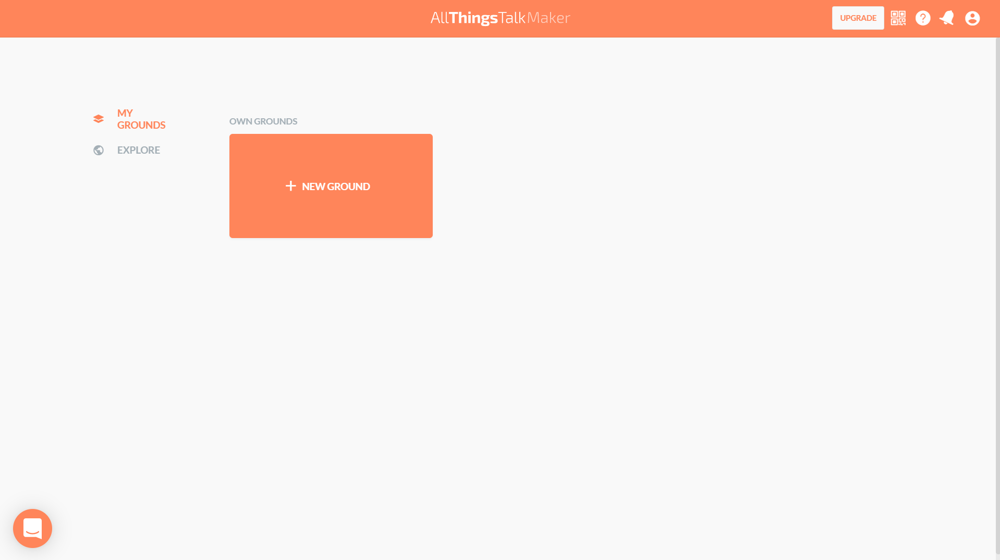
Ground
The ground groups all the relevant IoT resources together (reference).
Create Ground
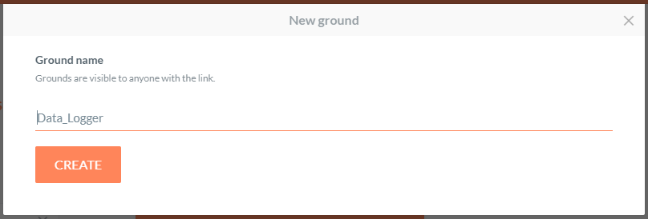
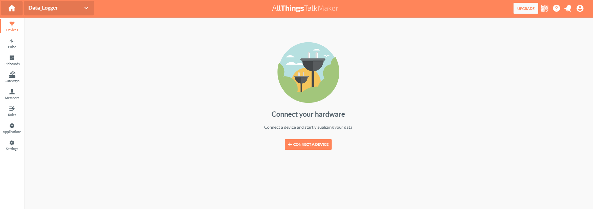
Next connect the device, by selecting: Your own device.
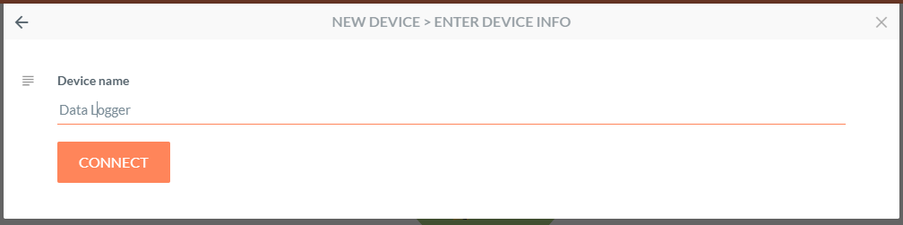
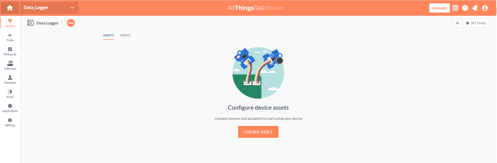
Assets
Assets are active components that hold the value of a measure, either in physical or virtual space. The SCD30 sensor module measures 3 physical parameters: CO2, temperature and humidity. These 3 parameters are the 3 assets that will be created.
device JSON file (device.json)
The device JSON file describes the device.
{
"device": {
"Title": "Data Logger",
"name": "Data Logger",
"description": "Data Logger",
"authentication": {
"api": "maker.allthingstalk.io",
"Ground_title": "Data_Logger",
"Ground_ID": "<yourGroundID>",
"Ground_Token": "Bearer maker:<yourGroundToken>",
"Device_ID": "<yourDeviceID>",
"timeout": "30"
},
"assets": {
"asset#0": {
"name": "Counter",
"title": "Counter",
"kind": "sensor",
"description": "",
"parameter name": "",
"profile": {
"type": "number",
"unit": ""
}
},
"asset#1": {
"name": "Temperature_degC",
"title": "Temperature [degC]",
"kind": "sensor",
"description": "temperature - SCD30 Sensor Module",
"profile": {
"type": "number",
"unit": " degC"
}
},
"asset#2": {
"name": "Humidity_perc",
"title": "Humidity [%]",
"kind": "sensor",
"description": "humidity - SCD30 Sensor Module",
"profile": {
"type": "number",
"unit": " %"
}
},
"asset#3": {
"name": "CO2_ppm",
"title": "CO2 [ppm]",
"kind": "sensor",
"description": "CO2 - SCD30 Sensor Module",
"profile": {
"type": "number",
"unit": " ppm"
}
}
},
"serial": {
"com_port": "com14",
"baud_rate": "115200"
}
}
}
The Ground ID and Ground token can be found on the ground settings page, the device on the device settings page.
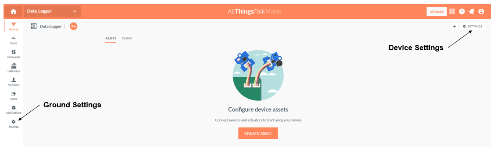

- asset kind. There are 3 supported asset kings: sensor, actuator and virtual. The data logger measures environmental data, kind = sensor.
- profile. The profile field defines the data type. The data logger gives for the counter an integer and for the assets related to the SCD30 Sensor Module a decimal, also the unit is provided in the profile field.
Create assets
Assets can be created by using the AllThingsTalk API. Below a Python function that creates assets.
def create_assets(device_file):
"""
Create the assets on a ground
Parameters
----------
device_file: str
device json file
Returns
-------
asset_list: list
list of created assets
Example
-------
>>> import json
>>> import requests
>>> asset_list = create_assets("device.json")
"""
with open(device_file) as json_file:
device = json.load(json_file)
url = "https://"+device["device"]["authentication"]["api"]\
+"/device/"+device["device"]["authentication"]["Device_ID"]\
+"/assets"
asset_list = []
for asset_nmb in range(len(device["device"]["assets"])):
asset = 'asset#' + str(asset_nmb)
payload = {
"name": device["device"]["assets"][asset]["name"],
"title": device["device"]["assets"][asset]["title"],
"description": device["device"]["assets"][asset]["description"],
"is": device["device"]["assets"][asset]["kind"],
"profile": device["device"]["assets"][asset]["profile"]
}
headers = {
'Content-Type': 'application/json',
'Authorization': device["device"]["authentication"]["Ground_Token"]
}
response = requests.request("POST", url, headers=headers,\
data=str(payload), timeout=10)
asset_list.append(response.json())
return asset_list
import json
import requests
asset_list = create_assets("device.json")
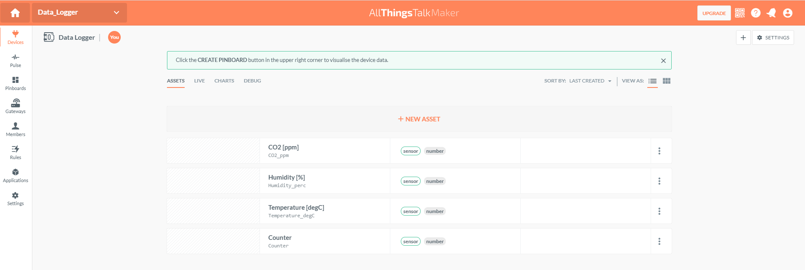
Pinboard
Pinboard let you visualize the collected data.
Create and arrange Pinboard
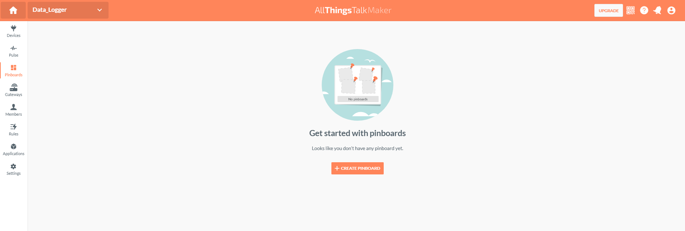
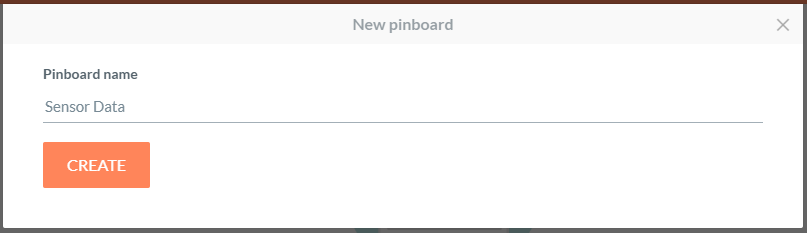
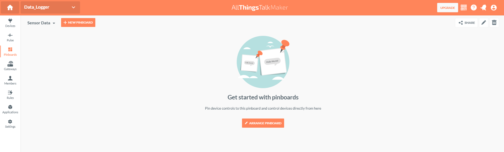
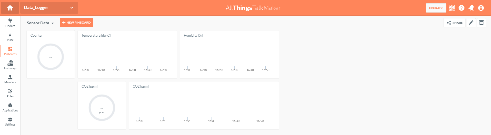